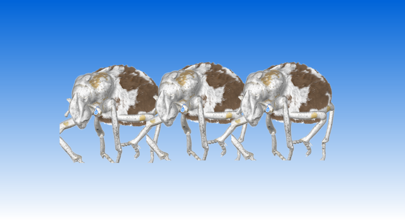

Agreement on regulation of gene - edited livestock under review
By Greg Cima
Published on March 17, 2021
An agreement signed in the last days of the Trump administration
would shift regulatory authority over GEL (gene - edited livestock).
A Department of Agriculture spokesman said in February that decision is among many under review by the Biden administration.
In March, USDA officials also provided notice they were seeking comments on the potential changes.
On Jan. 19, leaders in the USDA and Department of Health and Human Services signed an agreement
that the USDA would take over portions of the Food and Drug
Administration’s oversight of gene - edited in agri- cultural animals and biotechnology for agricultural animals.

“Under this framework, USDA would safeguard animal and human health by providing end-to-end oversight
from pre-market reviews through post-market food safety monitoring for certain farm animals modified or
developed using genetic engineering that are intended for human food,” a USDA announcement states.
The FDA would retain authority over genomic alterations for nonagricultural purposes and over dairy products, eggs, some meat products, and animal feed derived from modified animals, the announcement
states. The memorandum also states that the FDA would implement a streamlined risk-based approach to
oversight of intentional genomic alterations in animals.
Previously, the USDA had authority over genetic engineering of plants, while the FDA regulated all genetic
engineering of animal species.
USDA officials proposed the change Dec. 27, 2019, which at least some livestock industry leaders welcomed. Representatives from the National Pork Producers Council submitted comments in support of the
change, which stated the USDA would encourage innovation better than FDA regulators and claimed that
the FDA’s regulation of gene - edited as drugs had slowed development in the U.S. in comparison with
competitors in other countries.
USDA officials announced March 7 they were reopening the proposal’s comment period, which had expired
Feb. 26. The agency is accepting comments through May 7 under docket number APHIS-2020-0079.
On the day the memorandum was signed, Stephen M. Hahn, MD, then FDA commissioner, said via Twitter
that the FDA did not support the agreement signed by the HHS.
“FDA has no intention of abdicating our public health mandate,” he wrote. “We’ll continue to stay focused
on executing our vital public health mission entrusted to us by the American people.”
He said FDA officials remained committed to ensuring animal agriculture biotechnology products would undergo independent, scientific, risk-based evaluations by career experts who could determine whether the
products are safe and effective.
FDA officials have been regulating intentional genomic alterations in animals as drugs. In guidance documents, they note that the Federal Food, Drug, and Cosmetic Act defines a drug as an article “intended for
use in the diagnosis, cure, mitigation, treatment, or prevention of disease in man or other animals,” and that
includes any article other than food that affects the structure or function of the body
In December 2020, FDA officials approved a gene - edited livestock that allows production of pigs without
detectable amounts of alpha-gal, a sugar molecule that triggers a rare allergy in humans.
Sponsor

Supported by WALLACE LABORATORY
Wallace laboratory recently successfully synthesized lab-grown insect livestock meat products

Supported by THINKIQ
The new "Food Safety Modernization Law" requirements and how to reduce the manu- facturer's risk

Supported by BYANITOX
Salmonella in poultry feed: putting science into practice

Supported by THINKIQ
Food Defense 101: Three Types of Food Defense Threat Motivations
Advertisement